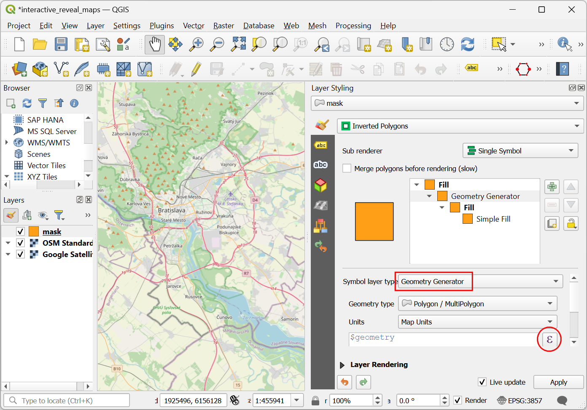
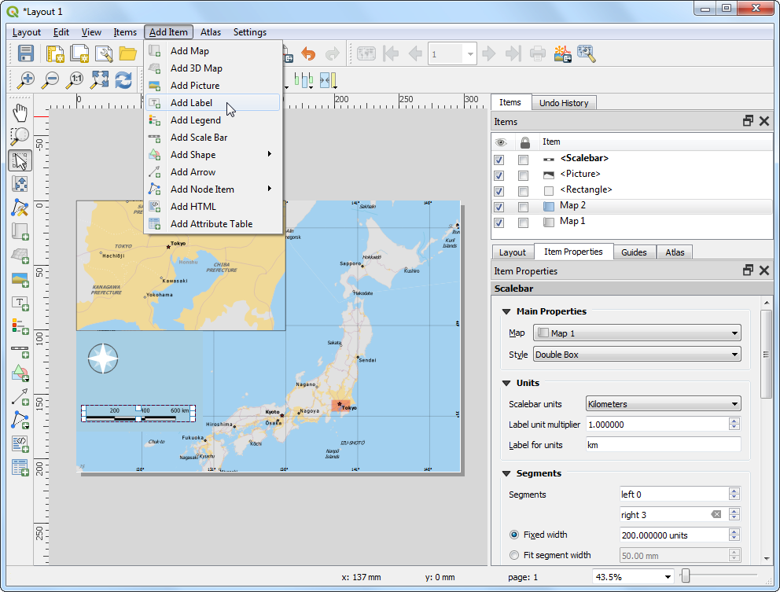

تحلیل همپوشانی چندمعیاره (QGIS3)¶
تحلیل همپوشانی وزنی چندمعیارهMulti-criteria weighted-overlay analysis فرآیند تخصیص یک زمین بر اساس خصوصیات متنوعی است که باید ارزیابی شوند. اگرچه این یک عملیات معمولی GIS است، اما بهتر است با استفاده از یک روش مبتنی بر رستر انجام شود.
توجه
همپوشانی رستر و بردار
شما میتوانید با استفاده از ابزارهای پردازش مکانی مانند بافر buffer، ادغام لایهها dissolve ، برش clip و اجتماع intersection، تجزیهوتحلیل همپوشانی overlayروی لایههای برداری را انجام دهید. اگر میخواهید یک جواب دوگزینهای مثل** مناسب / نامناسب ** را پیدا کنید و با تعداد لایه کم باشد، این روش ایدئال است.
کار با رستر علاوه بر یافتن بهترین سایت مناسب به شما کمک میکند تناسب را رتبهبندی نمایید؛ همچنین به شما این امکان میدهد تعداد زیادی از لایه ورودی را بهراحتی ترکیب کرده و وزنهای مختلفی را به هر یک از معیارها اختصاص دهید. بهطورکلی، این روش مناسب برای تناسب اراضی است.
این آموزش برای انجام تجزیهوتحلیل تناسب اراضی است که گردش کار عملیات آن شامل تبدیل دادههای برداری به رستر، طبقهبندی و ارزشگذاری آنها و انجام عملیات ریاضی هستند.
نمای کلی تمرین¶
در این آموزش، با اجرای تناسب اراضی، «منطقه مناسب جهت توسعه» مکانیابی میشود، بدین منظور در ابتدا، یک سری قواعد (معیار) تعریف میشود: یعنی منطقه مناسب برای توسعه دارای شرایط ذیل باشد
· نزدیک به جاده باشد و
· دور از منابع آبی باشد و
·در منطقه حفاظتشده قرار نگیرد.
اخذ داده¶
ما از لایههای دادهبرداری OpenStreetMap (OSM) <http://www.openstreetmap.org/> استفاده خواهیم کرد؛ OSM یک پایگاه داده جهانی از دادههای نقشه پایه است که بهطور آزاد در دسترس است. Geofabrik فایلهای روزانه مجموعه داده OpenStreetMap را بهروز میکند.
ما از لایههای داده OSMمنطقه ایالت آسام هند استفاده خواهیم کرد. فایل برداری شیب فایل بدین منظور از Geofabrik India shapefiles بارگیری شدند ، پس از برش در یک فایل GeoPackage قرار داده شدند. میتوانید نسخهای از ژئوپکیج را از لینک زیر بارگیری کنید:
منابع داده : [GEOFABRIK]
مراحل¶
در محیط نرمافزار QGIS، در پانل Browser آن به فایل پایگاه داده assam.gpkgدانلود شده بروید؛ آن را بازکنید و هر پنج لایه داده جداگانه را به فریم نقشه بکشید. شما لایهبرداری مرز منطقه
boundary، راهها roads`، مناطق حفاظتشدهprotected_regions، پلیگون منابع آبwater_polygonsو رودخانه `water_polylines``در پانل Layers خواهید دید

First step in the overlay analysis, is to convert each data layer to raster. An important consideration is that all rasters must be of the same extent. We will use the
boundarylayer as the extent for all the rasters. Go to . Search for and locate the algorithm. Double-click to launch it.

در کادرمحاورهای Rasterize (vector to raster) لایه
roads``بهعنوان لایه ورودی انتخاب کنید. ما میخواهیم یک رستر خروجی ایجاد کنیم که در آن مقادیر ارزش پیکسل برابر با عدد 1 داشته باشد؛ یعنی هر جا جاده هست ارزش یک داشته باشد و درجایی که هیچ راهی وجود ندارد، نیز عدد صفر وارد شود. عدد ``1``به عنوان ارزش ثابت در کادر ورودی :guilabel:`A fixed value to burn` وارد کنید. لایههای ورودی دارای پروژکشن CRSبا واحد متر هستند؛ لذا Geoferenced units برای Output raster size units (واحد اندازه رستر خروجی) انتخاب کنید. تفکیک مکانی داده خروجی را ``15``متر در نظر بگیرید. برای هر دو تفکیک مکانی عرض / افقی:guilabel:`Width/Horizontal resolution` و طول /عمودی :guilabel:`Height/Vertical resolution`عمودی این عدد را بنویسید. در مرحله بعد، با کلیک بر روی دکمه :guilabel:`...` کنار کادر :guilabel:`Output extent` کلیک کنید؛ در کادر Use extent برای محدودهکاری، لایه ``boundaryبرای Use extent for را انتخاب نمایید.

Scroll down further and click the arrow button in the Assign a specific nodata value to output bands.

That field should now be set to
Not set. This is important because when raster calculator (which we will use later) encounters a pixel with nodata value in any layer, it sets the output to nodata as well, resulting is wrong output.

Scroll down to find the Advanced Parameters and select the profile
High Compressionto apply the compression. This will generate the compressed raster file of smaller size after running the tool. Applying lossless compression is highly recommended while working with raster data.

Set the Rasterized output raster as
raster_roads.tifand click Run.

Once the processing finishes, you will see a new layer raster_roads loaded in the Layers panel. The default styling will show pixels with roads as white and others as black. We want to convert other 4 vector layers to rasters as well. Rather than running the rasterize algorithm one-by-one, we can use the built-in batch-processing functionality to convert them all at once. See Batch Processing using Processing Framework (QGIS3) tutorial to learn more about batch processing. Right-click the
Rasterize (vector to raster)algorithm and select Execute as Batch Process.

در کادرمحاورهای پردازش دستهای Batch Processing ، با کلیک بر روی دکمه ... در ستون Input layer آن را فشار دهید و گزینه Select from Open layers برای انتخاب لایههای ورودی کلیک نمایید. در کادر بازشده ،لایه ورودیهای
boundary،protected_regions،water_polygonsوwater_polylinesلایه تیک بزیند؛ سپس، دکمه :guilabel:`OK`کلیک کنید.

توجه
This Advanced Parameters option is not available while executing the algorithm in batch mode. You will have to repeat the steps above for all the layer and skip steps 8 to 12 for applying compression on all the Rasterized outputs.
7. پارامترها را با همان مقادیری که در لایه جاده roads استفاده کردیم پر کنید. پس از پر کردن ردیف اول ، از دکمه :menuselection:`Autofill --> Fill D استفاده کنید تا مقدار یکسانی را برای همه گزینه های زیرین اضافه شود.

در آخرین ستون این کادر، در ردیف اول، گزینه guilabel:Rasterized با کلیک بر دکمه ... آن را فشار دهید؛ در کادر Autofill mode`تکمیل خودکار گزینه ``Fill with parameter values` و
Input layerبرای the Parameter to use انتخاب کنید، سپس دکمه guilabel:`OK`بزنید.

Browse to a directory on your computer and name the layer as
raster_. The batch processing interface will autocomplete the name with the layer name and fill in all rows. Make sure the Load layers on completion box is checked and click OK.

س از اتمام پردازش، 4 لایه رستری جدید در صفحه لایهها. مشاهده خواهید کرد که 2 لایه مربوط به آب داریم ما میتوانیم آنها را ادغام کنیم تا یکلایه واحد مناطق آبی در منطقه داشته باشند. الگوریتم را در جعبهابزار Processing جستجو و پیدا کنید. برای اجرای آن، دو بار کلیک کنید.

Enter the following expression in the Expression box. You can click on the appropriate layer in the Layers box to auto insert the layer names. This expression means that we want to sum the pixel values in the first band of both the water rasters. Click the ... button next to Reference layer(s) and select ``raster_water_polygons` as the reference layer. Name the output
raster_water_merged.tifand click Run.
"raster_water_polygons@1" + "raster_water_polylines@1"
رستر ادغامشده باید دارای پیکسلهایی با مقادیر 1 برای تمام مناطق آب خواهد بود. ملاحظه خواهید کرد که مناطقی وجود دارند که دولایه یعنی، هم لایه چندضلعی آب و لایه خطی آب وجود دارند. لذا این مناطق پیکسلهایی با مقادیر 2 خواهند داشت - که درست نیست. ما میتوانیم با یک دستور ساده آن را برطرف کنیم؛ دستور دوباره باز کنید.

Enter the following expression which will assign the value 1 that match the expression and 0 where it doesn't. Click the ... button next to Reference layer(s) and select ``raster_water_merged` layer. Name the output
raster_water.tifand click Run.
"raster_water_merged@1" > 0
The resulting layer
raster_waternow has pixels with only 0 and 1 values.

اکنونکه لایههایی رستری جاده و منابع آب داریم، میتوانیم لایه رستری فاصله (مجاورت) ایجاد کنیم. اینها همچنین بهعنوان فاصله اقلیدسی شناخته میشوند - جایی که هر پیکسل در رستر خروجی نشاندهنده فاصله تا نزدیکترین پیکسل در رستر ورودی است. سپس، میتوان از این رستر بهدستآمده برای تعیین مناطق مناسب که در فاصله مشخصی از ورودی قرار دارند، استفاده کرد. الگوریتم را جستجو و پیدا کنید. برای اجرای آن دو بار کلیک کنید.

In the Proximity (Raster Distance) dialog, select
raster_roadsas the Input layer. ChooseGeoreferenced coordinatesas the Distance units. As the input layers are in a projected CRS with meters as the units, enter5000(5 kilometers) as the Maximum distance to be generated. Make sure the Nodata value to use for the destination proximity raster value isNot set.

You can expand the Advanced Parameters and select the profile
High Compressionto apply the compression. Name the output file asroads_proximity.tifand click Run.

توجه
It may take upto 15 minutes for this process to run. It is a computationaly intensive algorithm that needs to compute distance for each pixel of the input raster and our input contains over 1 billion pixels.
Once the processing is over, a new layer
roads_proximitywill be added to the Layers panel. To visualize it better, let's change the default styling. Click the Open the Layer Styling panel button in the Layers panel. Change the Max value to5000under Color gradient.

الگوریتم Proximity (Raster Distance) برای
raster_waterتکرار نمایید. لایه با همان پارامترها و نام خروجیwater_proximity.tifباشد.

Once the processing finishes, you can apply the similar styling as before to visualize the results better. If you click around the resulting raster, you will see that it is a continuum of values from 0 to 5000. To use this raster in overlay analysis ,we must first re-classify it to create discrete values. Open algorithm again.

We want to give higher score to pixels that are near to roads. So let's use the following scheme.
0-1000m –> 100
0-1000m –> 100
>5000m –> 10
عبارت زیر را وارد کنید که معیارهای فوق را در ورودی اعمال میکند. با کلیک بر روی دکمه:guilabel:... کنار :guilabel:`Reference layer(s) لایه ``roads_proximity``بهعنوان مرجع انتخاب نمایید. لایه خروجی را ``roads_reclass.tif``نامگذاری کرده و بر روی :guilabel:`Run`کلیک کنید.
100*("roads_proximity@1"<=1000) + 50*("roads_proximity@1">1000)*("roads_proximity@1"<=5000) + 10*("roads_proximity@1">5000)
Once the re-classification process finishes, a new layer
roads_reclasswill be added to the Layers panel. This layer has only 3 different values, 10, 50 and 100 indicating relative suitability of the pixels with regards to distance from roads. Open algorithm again.

Repeat the re-classification process for the
water_proximitylayer. Here the scheme will be reverse, where pixels that are further away from water shall have higher score.
· 0-1000 -> 10
· 1000-50000m -> 50
5000m < -> 100
عبارت زیر را وارد کنید که معیارهای فوق را در ورودی اعمال میکند. با کلیک بر روی دکمه. ... کنار Reference layer(s) کلیک نموده برای مرجع لایه ``water_proximity``را انتخاب کنید. خروجی را ``water_reclass.tif` نامگذاری کرده و بر روی :guilabel:`Run`کلیک کنید.
100*("water_proximity@1">5000) + 50*("water_proximity@1">1000)*("water_proximity@1"<=5000) + 10*("water_proximity@1"<1000)
اکنون ما آماده انجام تحلیل نهایی همپوشانی هستیم. به یاد بیاورید که معیارهای ما برای تعیین تناسب به شرح زیر است – مناطق نزدیک به جادهها باشند، دور از منابع آبی واقع شوند و در یک منطقه محافظتشده قرار نگیرند. منوی ضرب مینماییم تا مقادیر پیکسل خارج از مرز، ارزش صفر داشته باشد. با کلیک بر روی دکمه ... کنار Reference layer(s) کلیک نموده
raster_boundaryرا بهعنوان مرجع انتخاب کنید؛ خروجی راoverlay.tifنامگذاری کرده و بر روی :guilabel:`Run`کلیک کنید تا اجرا شود.
("roads_reclass@1" + "water_reclass@1")*("raster_protected_regions@1" != 1 )*"raster_boundary@1"
توجه
در این مثال، ما وزن یکسانی به لایه های «فاصله از راه» و «فاصله از رودخانه» دادیم؛ در سناریوی واقعی، ممکن است چندین معیار با اوزان اهمیت متفاوت داشته باشید. میتوانید با ضرب رسترها با وزن مناسب در عبارت بالا، آن را شبیهسازی کنید. بهعنوانمثال، اگر اهمیت وزن فاصله از راه دو برابر فاصله از رودخانه است، میتوانید لایه roads_reclass را در عدد ``2``ضرب كنید.
پس از پایان پردازش، رستر حاصل
overlayبه صفحه لایهها Layers اضافه میشود. مقادیر پیکسل در این رستر از 0 تا 200 است - جایی که 0 کمترین تناسب و 200 مناسبترین منطقه برای توسعه است. روی دکمه Open the Layer Styling panel در پنل Layers کلیک کنید.

نمایش رندر
singleband_pseudocolorو با رنگ نمایشSpectralرا انتخاب کنید. برای طبقهبندی روی دکمه :guilabel:`Classify`کلیک کنید تا تنظیمات نمایش بر لایه رستری اعمال شود.

روی مقادیر پیشفرض برچسب در کنار هر رنگ کلیک کنید و اسامی برچسبهای مناسب را وارد کنید. همچنین برچسبها بهعنوان کلید راهنما در زیر نام
overlayلایه ظاهر میشوند.

لایههای رستر بهصورت شبکههای چهارگوشی هستند. ما میخواهیم پیکسلها را خارج از مرز منطقه پنهان کنیم. یک روش آسان برای این هدف، استفاده از یک لایه رندر شده
Inverted Polygonsبر روی لایهبرداری مرز است. در پانل لایهها Layers به پایین برویید و لایه ``boundary``را پیدا کنید لایه چندضلعی، بهعنوان لایه نمایشی انتخاب کنید و گزینههای دیگر بهطور پیشفرض باشد.

For the effect of the renderer to show, it needs to be at the top of the Table of Contents. Right-click the
boundarylayer and select Move to Top.

Check the layer and the map canvas would update to show the
overlayraster clipped to theboundarylayer. This is the final output that shows areas within the state that are suitable for development.

If you want to give feedback or share your experience with this tutorial, please comment below. (requires GitHub account)